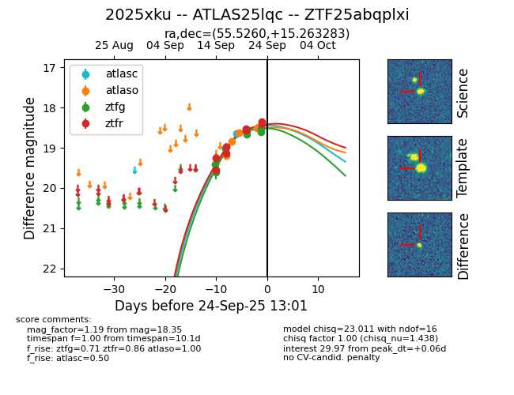
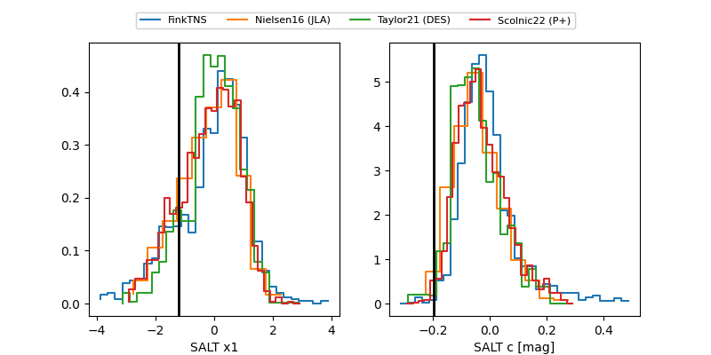

FINK: ZTF25abqplxi
Lasair: ZTF25abqplxi
ALeRCE: ZTF25abqplxi
TNS: 2025xku
YSE: 2025xku
ZTF25abqplxi (ztf,fink)
2025xku (tns,yse)
ATLAS25lqc (atlas)
equatorial (ra, dec) = (55.5260,+15.26328)
galactic (l, b) = (172.4655,-30.75008)


last atlasc=18.65, atlaso=18.50, ztfg=18.54, ztfr=18.35
1 atlasc, 4 atlaso, 8 ztfg, 8 ztfr detections